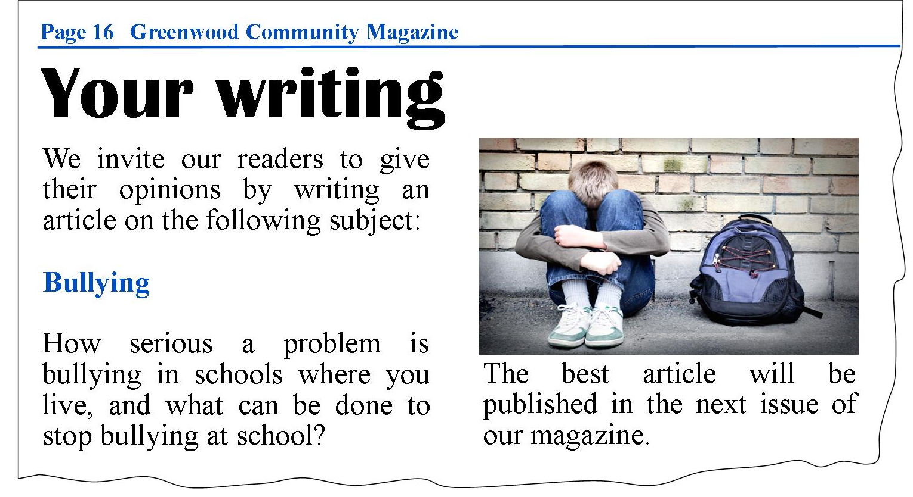

The happiest day of your life
by Jamie Field
School days should be a happy time in a young person's life. What can make people's lives a misery during this time, then? In my
opinion, there is one word which answers this question - bullying.
Unfortunately,bullying is quite common in schools where I live. It can affect students of any age, and both boys and girls. A friend of mine had a very negative experience at school last year as an older boy continually called him names and sometimes used to post nesty messages about him on Facebook. Obviously,my friend felt very upset about this and it affected his self-confidence. Some days, he didn't want to come to school at all.
What can people do to stop this problem? Personally, I think teachers need to be aware that bulling may be happening in their classes and be very strict when they have a case of bullying. Another thing teachers could do is prepare lessons to talk about the problem with their pupils, which might make bullies realise how badly they hurt their victims. As for students, if they find out a classmate is being bullied, they should support them as mach as possible a let a teacher know.
Bullying can be a nightmare but there are things we can do to prevent it. Hopefully,one day all students will be able to go to school without fear of being bullied.
Top Tips for writing
- Use a catchy title to get people interested
- Ask direct questions to get the reader`s attention
- Use opinion adverbs to introduce your points